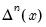
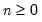
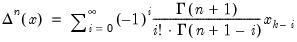
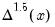

@fracdiff Series Utility Fractional difference of series data. Syntax: @fracdiff(x, y[, s]) x: series y: series s: (optional) sample string or object Return: series Returns  for series x for :  (18.6) This function is panel aware. Examples show @fracdiff(@demean(x),1.5) applies  to the demeaned version of the series x. Cross-references See also d.